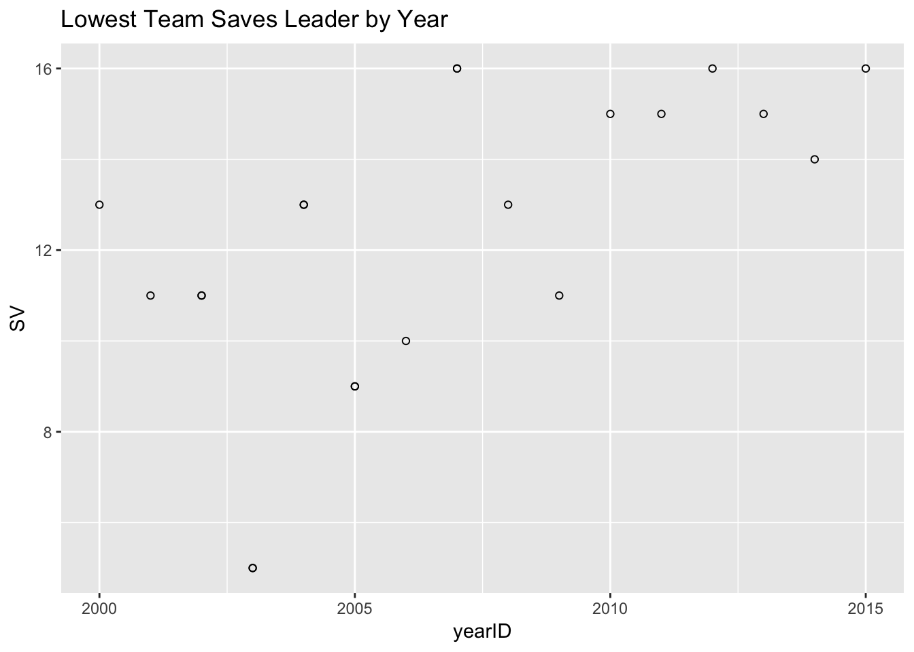

I was listening to my fantasy baseball podcast last week, and the conversation turned to the Phillies closer situation. One host suggested that the Phillies might not have any pitcher with more than 10 saves this season. The other host thought that this would be unlikely. They looked quickly at the data and found that this has happened a few times since 2000. I wondered if there was a way to look this up using the Lahman database in R.
Introduction
The Lahman database is a tremendously useful dataset that has been maintained by many individuals over the years. This has been compiled into an R package that makes using this database easy.
Question: Which pitchers led their teams in saves each year? Of these, who had the lowest total in baseball that year?
Methods
Here I loaded the relevant packages and the Pitching table.
library(Lahman)
library(dplyr)##
## Attaching package: 'dplyr'## The following objects are masked from 'package:stats':
##
## filter, lag## The following objects are masked from 'package:base':
##
## intersect, setdiff, setequal, unionlibrary(ggplot2)
data(Pitching)
data(Master)
Pitching <- tbl_df(Pitching)
Master <- tbl_df(Master)Classical R code would do a split, apply, and combine strategy. I wanted to see if I could do this in dplyr. The examples are pretty good for finding things like HR leaders although there are no examples of doing this by team. I tried group_by but it didn’t work like I thought it might, so I resorted to using a helper function.
This function takes a year as the input. It filters the pitching data for that year, groups players by team, and finds the team saves leader. It then takes those team saves leaders and finds out which one (or more in the case of ties) had the fewest saves that season.
team_SV_leaders <- function(year) {
max_saves <- Pitching %>% filter(yearID == year) %>%
select(playerID, yearID, stint, teamID, SV) %>%
group_by(teamID) %>%
top_n(1, SV) %>% # Determine team saves leader
arrange(SV)
max_saves[which(max_saves$SV == min(max_saves$SV)), ]
}For example, in 2012 Glen Perkins led the Minnesota Twins with 16 saves. His was the lowest save total for any team’s closer that year.
team_SV_leaders(2012)## Source: local data frame [1 x 5]
## Groups: teamID [1]
##
## playerID yearID stint teamID SV
## <chr> <int> <int> <fctr> <int>
## 1 perkigl01 2012 1 MIN 16Results
I bound together the results from calling this function on every year since 2000. This resulted in the following table.
SV_table <- data_frame()
for(i in 2000:2015) {
SV_table <- bind_rows(SV_table, team_SV_leaders(i))
}
SV_table <- SV_table %>% inner_join(Master) %>%
select(yearID, nameFirst, nameLast, stint, teamID, SV)## Joining, by = "playerID"as.data.frame(SV_table)## yearID nameFirst nameLast stint teamID SV
## 1 2000 Ryan Kohlmeier 1 BAL 13
## 2 2001 Buddy Groom 1 BAL 11
## 3 2002 Keith Foulke 1 CHA 11
## 4 2002 Antonio Osuna 1 CHA 11
## 5 2003 Franklyn German 1 DET 5
## 6 2003 Chris Mears 1 DET 5
## 7 2004 Jeremy Affeldt 1 KCA 13
## 8 2004 Bob Wickman 1 CLE 13
## 9 2005 Fernando Rodney 1 DET 9
## 10 2005 Ugueth Urbina 1 DET 9
## 11 2006 Tyler Walker 2 TBA 10
## 12 2007 Eric Gagne 1 TEX 16
## 13 2007 Chris Ray 1 BAL 16
## 14 2008 Jensen Lewis 1 CLE 13
## 15 2009 Jason Frasor 1 TOR 11
## 16 2010 J. C. Gutierrez 1 ARI 15
## 17 2011 Matt Capps 1 MIN 15
## 18 2012 Glen Perkins 1 MIN 16
## 19 2013 Heath Bell 1 ARI 15
## 20 2014 Jake Petricka 1 CHA 14
## 21 2015 Fernando Rodney 1 SEA 16ggplot(SV_table, aes(x = yearID, y = SV)) +
geom_point(shape=1) +
ggtitle("Lowest Team Saves Leader by Year")
Discussion
In 2003 the Detroit Tigers had a record of 49-113 and not surprisingly had only 27 saves. Of these, Franklyn German and Chris Mears both had 5 to lead the team. This figure seems to be the principal reason for why the save leaders had such low totals.
The Tigers were improved in 2005 but still only went 71-91. Fernando Rodney and Ugueth Urbina both led the team with 9 saves. Urbina was traded in June to the Phillies, limiting his total saves for the Tigers. That was his last season in the MLB because he was arrested in the winter for attempted murder. He was ultimately convicted and spent 7 years in prison (source) .
Interestingly, Troy Percival, who as of this writing, is #10 on the career saves list, was also on the team and only had 8 saves. His season ended early after an injury in July, and after another year on the DL, he retired from playing baseball.
Future Work
While I thought I would be able to do this all in dplyr, I ended up falling back to traditional methods, like the for loop.
One question that this work generated was what is a typical percentage of saves/wins? Is there a way to predict this using run differential?
Conclusion
It was not common for a team to have a saves leader who saved fewer than 10 games.